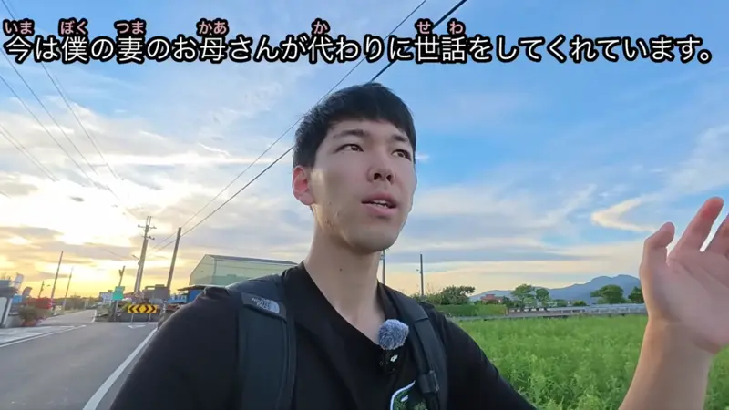
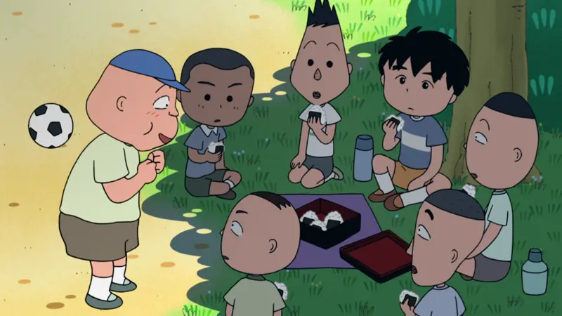
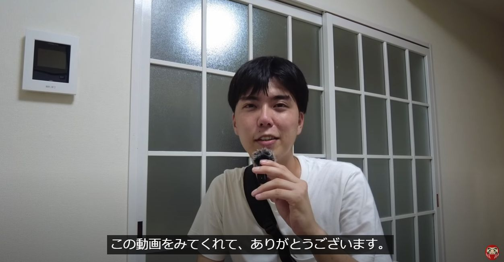
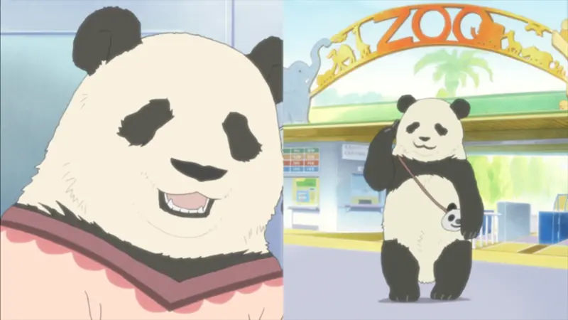
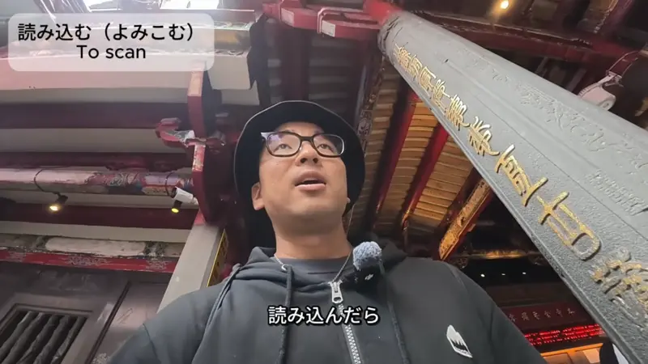

くれる・てくれる

YouTube · video
今は、僕の妻のお母さんが、代わりに世話をしてくれています。
"Right now, my wife's mom is looking after [it] for us instead."
くれる means someone gives to me (or to my side: my family, my friends). After a て-form it means someone does something for me.
Here: 世話をして + くれる. It answers "who's helping us out?": my wife's mom.
Polite: くれます. Here it's くれています, "is doing it for us" right now. The casual one is right below.
Shirokuma Cafe · Episode 2
じゃ、白熊君、肩揉んでくれる？
"Then, Polar Bear, will you massage my shoulders?"
Casual: plain くれる. Asked as a question, it's a friendly favor: "will you do this for me?"
Examples
Your friend just got back from Kyoto and handed you a box of sweets. You tell your sister.
友達がお土産をくれた。
"My friend gave me a souvenir."
Plain くれる: the thing comes to me. No "me" needed, くれる already says it.
CasualA coworker likes your new pen and asks where it's from.
これ、部長がくれました。
"My boss gave me this."
Only toward you or your side. When YOU give something, it's a different verb (あげる).
PoliteYou missed the bus, but your mom drove you to the station.
母が駅まで送ってくれました。
"My mom drove me to the station."
送って + くれる: she did it for me.
PoliteYour friend is about to leave, but you need one more minute.
ちょっと待ってくれる？
"Can you wait a sec?"
A question with くれる = asking a favor.
CasualWith and without
友達が手伝いました。
"My friend helped." Just a fact. Helped who? Not said.
友達が手伝ってくれました。
"My friend helped me out." It was for me, and I'm glad.
Sentence mining

Source unknown No source
なあ、そのおむすび、俺にもくれよ！
"Hey, give me one of those rice balls too!"
Plain くれる, "give me". くれ is the blunt command form.
YouTube · video
守り神の意味は、守ってくれる神様のことです。
"A 守り神 is a god who protects you."
守って + くれる: protects (us).
Shirokuma Cafe · Episode 4
まあね、教えてくれる教官は厳しいし
"Well, yeah, and the instructors who teach us are strict..."
教えて + くれる: they teach (us).
YouTube · video
はい。皆さん、本当にいつも応援してくれて、本当にありがとうございます。
"Yes. Everyone, thank you so much for always supporting me."
～てくれてありがとう: thanks for doing it (for me).
Shirokuma Cafe · Episode 12
パンダのストラップもつけてくれるし
"And they even put a panda strap on it for you."
つけて + くれる: the shop does it for you.

Comprehensible Japanese · これ、それ、あれ、どれ
この動画をみてくれて、ありがとうございます。
"Thank you for watching this video."
見て + くれて + ありがとう. You watched, for me.

Shirokuma Cafe · Episode 4
バイト帰りに、買ってきてくれる？
"Could you buy some on your way home from work?"
A question with くれる = asking a favor.

YouTube · video
QRコードを、あの読み込んだら、そうガイドしてくれる。
"If you scan the QR code, it guides you."
Even a machine can くれる: it does something for you.